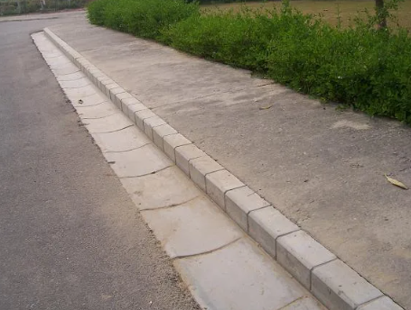
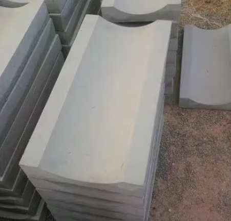

RCC Drain Cover & Saucer Drain Manufacturer in Panipat
We manufacture and supply RCC drain covers, also known as concrete drain covers, cement drain covers, CC drain covers and precast drain covers for residential, commercial and industrial drainage systems.
Our precast RCC drain covers and saucer drains are widely used in housing projects, industrial areas, construction sites and road works across Panipat, Karnal, Samalkha, Sonipat, Kurukshetra, Shamli and Muzaffarnagar.
Applications
- Storm water drainage systems
- Roadside drainage
- Industrial drainage channels
- Residential colony drainage
- Parking and commercial areas
Specifications
Available Sizes:
- 1 ft x 1 ft
- 1.5 ft x 1.5 ft
- 2 ft x 2 ft
- Custom sizes as per project requirement
Load Capacity:
- Light Duty
- Medium Duty
- Heavy Duty
Concrete Grade: M20 / M25 as per construction specification
Advantages of Precast RCC Drain Covers
- Strong reinforced concrete structure
- Factory-controlled quality
- Long-lasting and weather resistant
- Cost-effective construction solution
- Easy installation and replacement



Areas We Supply
We supply RCC, cement and concrete drain covers in Panipat, Karnal, Samalkha, Sonipat, Kurukshetra, Delhi, Shamli and Muzaffarnagar.
FAQ – RCC / Concrete Drain Covers
What is an RCC drain cover?
An RCC drain cover is a reinforced cement concrete cover used to close drainage channels. It is also known as a concrete drain cover, cement drain cover or CC drain cover.
Are precast drain covers better than cast iron?
Precast RCC drain covers are durable, cost-effective and suitable for most residential and industrial drainage systems.
Do you manufacture saucer drains?
Yes. We manufacture precast saucer drains and RCC drain covers suitable for road and colony drainage systems.
Do you supply in nearby cities?
Yes. We supply in Panipat, Karnal, Samalkha, Sonipat, Kurukshetra, Shamli and Muzaffarnagar.